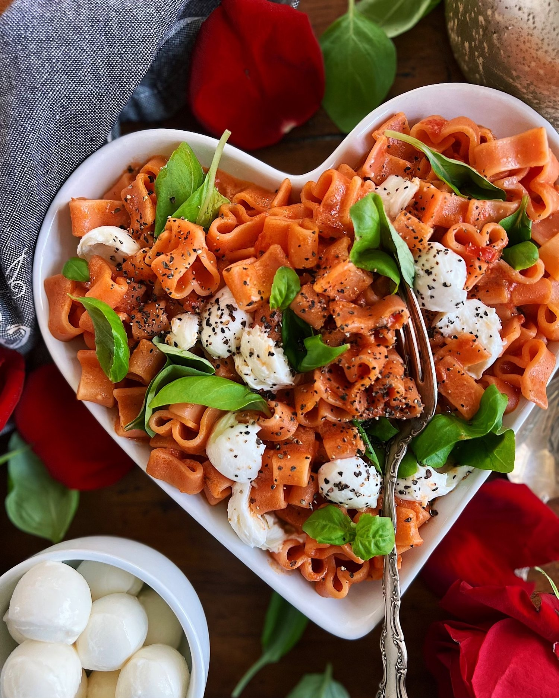

Welcome to Pasta Paradise
Welcome to your ultimate pasta hub! Whether you're here to find a new recipe, learn about pasta
history, or simply admire the delicious diversity of noodles, you’re in the right place.
At
Pasta
Paradise, we celebrate the flavor, culture, and comfort that pasta brings to tables around the
world.
From the rustic charm of handmade tagliatelle to the elegance of a silky carbonara, pasta is
more
than just a meal—it’s a story. A story passed down through generations, shaped by regions,
traditions, and personal twists. Here, we invite you to explore pasta in all its forms and
flavors,
and maybe even fall in love with it all over again.
Why We Love Pasta
Pasta isn’t just food — it’s a lifestyle. It’s the go-to meal on a busy weeknight, the
centerpiece of
Sunday family dinners, and a symbol of Italian culinary heritage. It's versatile, affordable,
and
endlessly customizable. Whether you're into creamy Alfredo, hearty Bolognese, or light olive oil
and
garlic, there’s a pasta dish for everyone.
We love pasta for its simplicity, its soul-satisfying warmth, and the way it brings people
together.
It can be dressed up for special occasions or tossed together in minutes with whatever’s in the
fridge. It’s comfort food that travels the globe, adapting to every kitchen while staying true
to
its roots. That’s the magic of pasta—and that’s what we’re here to share.
What You'll Find Here
- Types of Pasta – Discover the shapes, sizes, and textures of your favorite noodles.
- Easy & Delicious Recipes – Learn to cook classic and creative pasta dishes.
- Pasta History – Explore pasta’s fascinating journey from ancient times to your dinner plate.
- Get In Touch – Share your pasta creations, questions, or suggestions with us.
Join Our Pasta Community
Follow us on Instagram and Facebook for weekly recipes, behind-the-scenes tips, and drool-worthy pasta photos. Use the hashtag #PastaParadise to share your own creations and get featured!